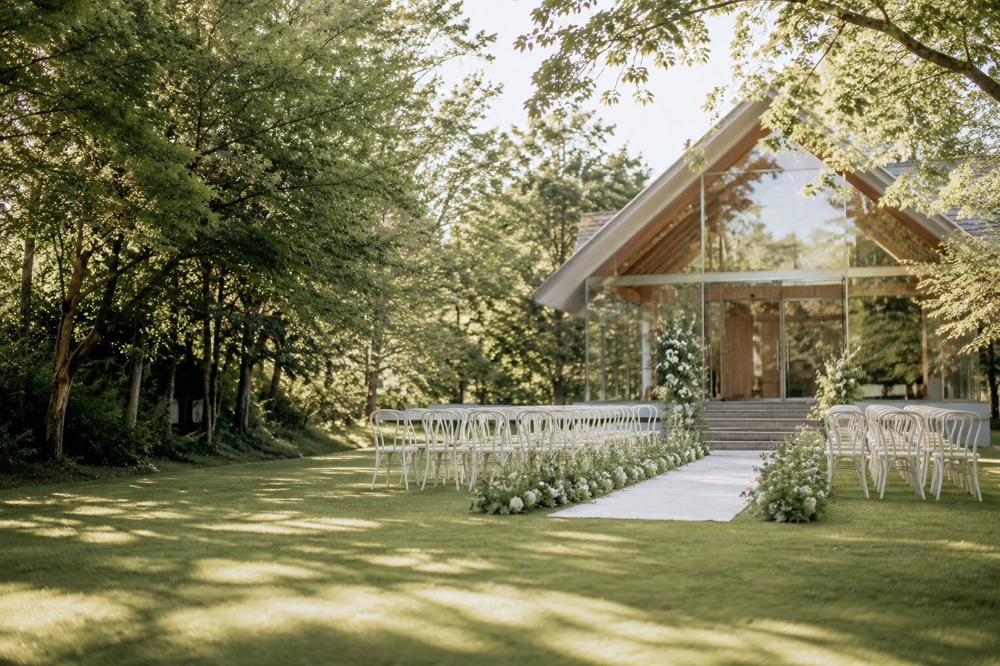
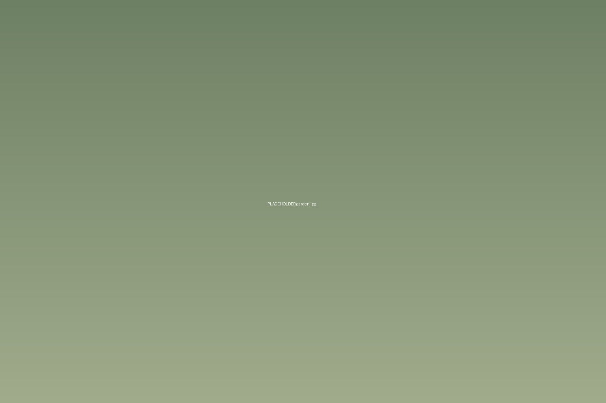
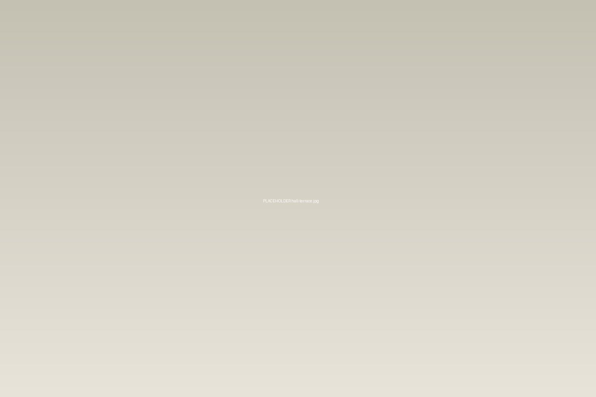
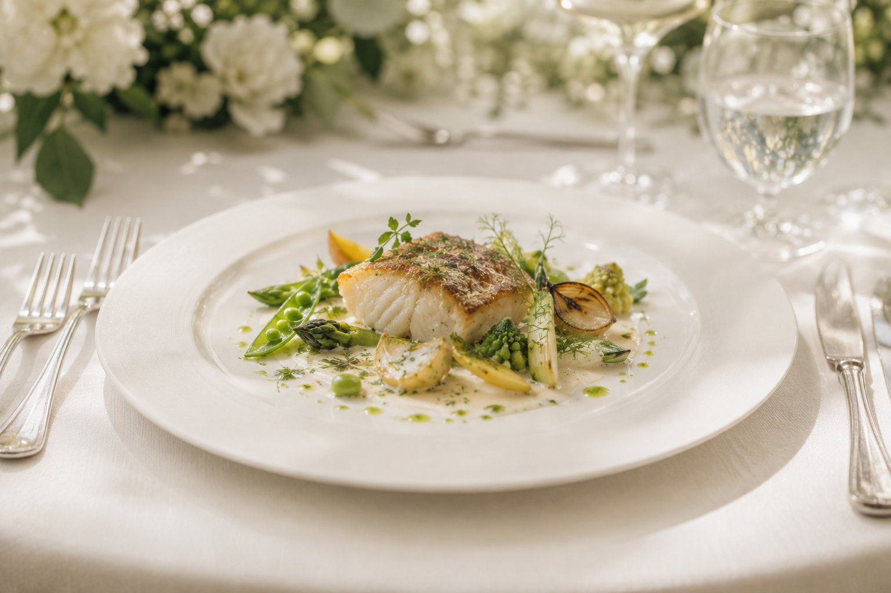

01
ガーデン挙式
木立の下、青空のもとで。雨天時は同じ導線でチャペルに切り替えますので、当日朝までご判断いただけます。

Garden Wedding in Fukui
足羽山のふもと、木立に囲まれた一軒家を貸し切って。おふたりとご家族の時間を、誰にも急かされずに。
About
1日2組まで。同じ時間に別の披露宴が入ることはありません。控室からガーデン、会場まで、その日はおふたりのご一家だけでお使いいただけます。
「◯時までに退場してください」と申し上げずに済むよう、組数を絞っています。ご親族のお写真も、庭が空くのを待たずに撮っていただけます。

Ceremony
どのかたちでも料金は変わりません。ご列席の顔ぶれを伺ってからお決めいただいて大丈夫です。
01
木立の下、青空のもとで。雨天時は同じ導線でチャペルに切り替えますので、当日朝までご判断いただけます。
02
天井まで届く窓から庭が見えるチャペル。着席60席、立ち見を含めて80名まで。生演奏を入れる方が多い会場です。
03
宗教色をつけず、ご列席の皆さまに承認いただく式。近隣の神社での神前式に参列いただいたあと、当館で披露宴のみという形も承ります。
※ 挙式のみのご利用（披露宴なし）も承っております。詳しくは見学の際にお尋ねください。
Banquet
ご人数で選んでいただけます。どちらもガーデンに直接出られる造りです。
高さ6mの吹き抜けに、庭に面した窓が並びます。60名を超えるご披露宴はこちらです。バンドやスクリーンを入れても余白が残ります。

ご家族・ご親族だけの会に。一つのテーブルを囲む形にもできます。テラスに出て歓談される方が多い会場です。
Cuisine
越前の魚、若狭の野菜、県内の蔵の日本酒。フレンチを軸にしながら、和の食材で組み立てています。コースは3種（11,000円／15,000円／19,800円・税込）からお選びいただけます。
アレルギー・苦手な食材・宗教上のご事情は、一名様ずつ献立を組み替えます。お子さま用のお食事、離乳食のお持ち込みも承ります。
試食は見学時のフェアでご用意しています（無料のフェアと、有料コース試食8,000円／組があります）。

Plan
下記は挙式・お料理・お飲み物・会場費・装花・音響・写真をひととおり含んだ総額の目安です（税込）。ご列席のご人数で大きく変わりますので、正確なお見積りは見学の際にその場でお出しします。
20名様
1,180,000円〜
おひとりあたり 約59,000円
60名様
2,980,000円〜
おひとりあたり 約49,000円
100名様
4,600,000円〜
おひとりあたり 約46,000円
※ ご祝儀を差し引いた自己負担額は、60名様のご披露宴でおよそ80〜120万円が目安です。
※ お持ち込みは、お衣裳・写真・映像・引出物のいずれも可能です（1点につき11,000〜33,000円の持込料を頂戴します。引出物のみ無料）。
※ 打ち合わせは平均5回、初回はご成約後すぐ、最終は挙式の3週間前です。遠方にお住まいの場合はオンラインでも承ります。
※ ご結婚式の1年前からご予約を承っています。土曜・祝前日の夕方は半年前には埋まることが多い枠です。
Bridal Fair
所要は約2時間。おふたりだけでも、ご両親とご一緒でも構いません。ご予約は前日18時まで、当日のご来館はお電話かチャットでお尋ねください。
SAT毎週土曜
チャペル・両会場をご覧いただいたあと、実際のコースから2品をお召し上がりいただきます。
10:00 / 14:00 ／ 約3時間 ／ 試食 8,000円（組）
SUN毎週日曜
実際の進行どおりに庭を歩いていただきます。雨天時はチャペルでの切り替えもご覧いただけます。
11:00 / 15:00 ／ 約2時間 ／ 無料
WED水曜・平日
ご予算とご人数を伺って、その場でお見積りをお出しします。会場のご見学もあわせて。
13:00 / 16:00 ／ 約2時間 ／ 無料
※ 定休日は火曜です（挙式が入る日を除く）。上記以外の日時をご希望の場合もお受けできることがありますので、ご相談ください。
Access